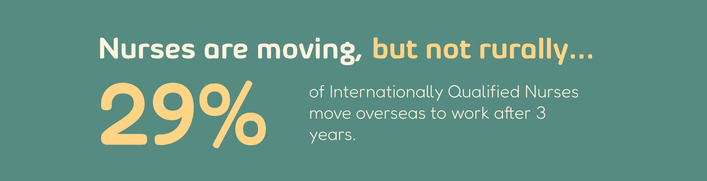
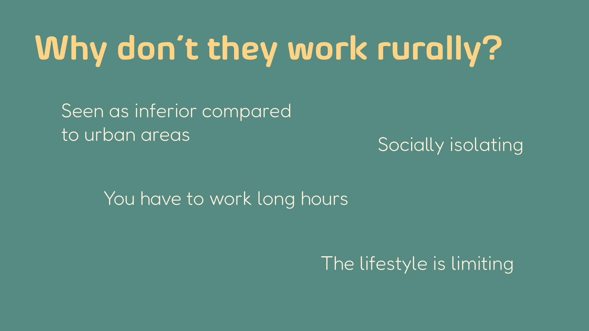
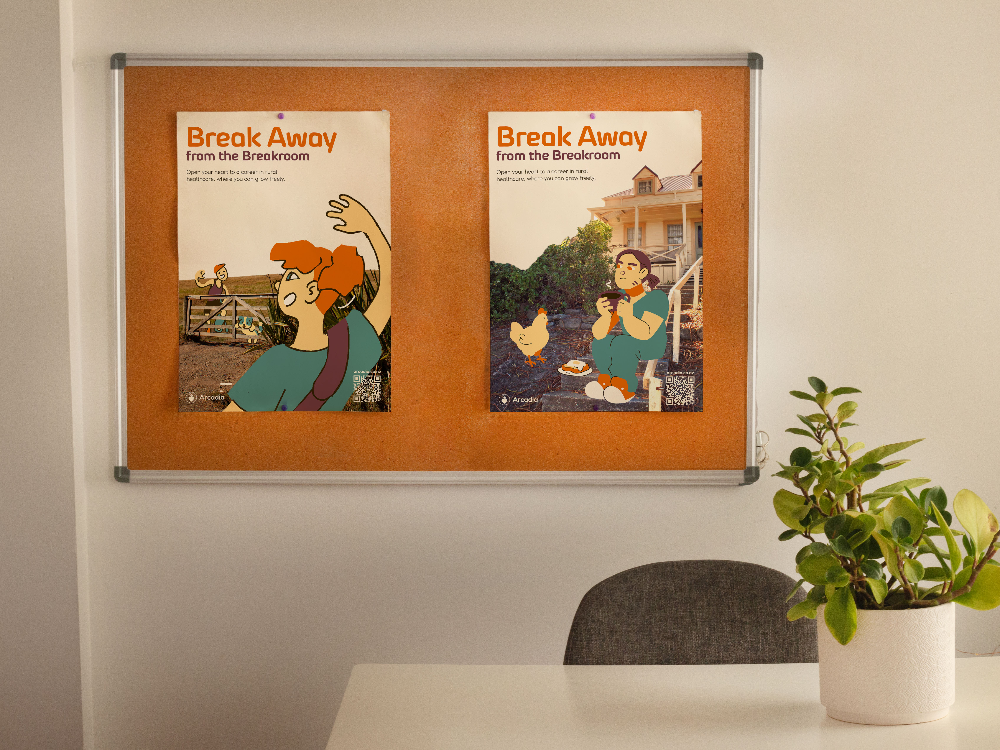
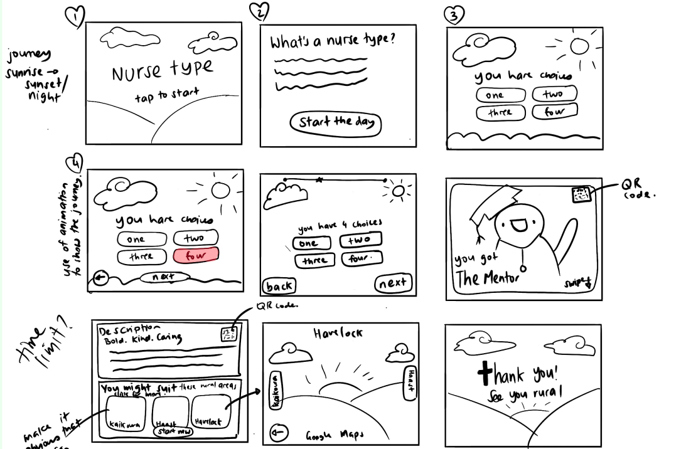
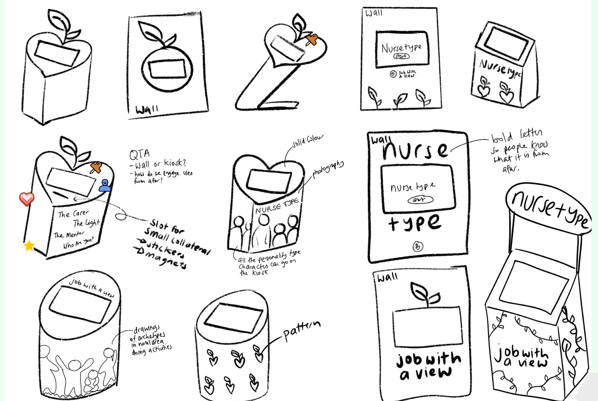

Arcadia
2025
SOFTWARES
Figma | Photoshop
TEAM MEMBERS
Jefritz Espino - Project Manager | UX/UI Designer | Graphic Designer
Alisa Volkova - UX/UI Designer | Lead Researcher
Hazel Rose Jordan - Graphic Designer | Illustrator
Jennifer Bampton - Motion Designer
BRIEF
New Zealand has a shortage of registered nurses in the rural health sector, making primary healthcare inaccessible to rural residents. However, challenges and stigmas surrounding rural healthcare work can discourage people from entering this workforce. So, how can we create a campaign that destigmatises and uplifts rural healthcare work for nurses aged 30 to 40 working in urban areas? Our solution, Arcadia, is a multimedia nurse recruitment campaign designed to help overcome the stigma surrounding rural healthcare and inspire nurses to work rurally.
 BRANDING
Our branding identity and tone of voice were friendly, uplifting, impactful and empathetic. Our original visual direction focused on photography and illustration-heavy ideas, which did not align with our branding identity. After some feedback, we refined our visual direction to a simpler mixed-media visual direction that clearly aligned with our brand.
POSTERS
Our posters displayed scenes of a rural nurse enjoying the rural lifestyle; they were created to inspire and immerse our nurses in the rural area. These will be placed in hospital break rooms and nurse conferences, as these are the areas where our nurses are more likely to feel relaxed and least stressed, therefore, they can associate these feelings with the posters.
INTERACTIVE EXPERIENCE
To further expose our nurses to rural areas, we created a personality quiz kiosk that will be placed in nurse conferences. Through some feedback, we found that adding a Be in to Win opportunity, Google 360 view of the rural area rather than a photo of it and a description of what Arcadia is all about, would highly increase the engagement and interest in the message of what Arcadia's goal is.
 

REFERENCES
Jean Ross, Josie Crawley and Rachel Parmee (2023). The Rural Way: Rural Nurses' Contribution to New Models of Health Care, Reducing Health Disparities - Stories from Practice. Rural Health - Investment, Research, and Implications. IntechOpen. https://doi.org/10.5772/intechopen.85821
Hauora Taiwhenua Rural Health Network. (2024). Rural general practice stocktake survey. Hauora Taiwhenua Rural Health Network. https://htrhn.org.nz/wp-content/uploads/2024/11/FINAL-Rural-General-Practice-Stocktake-Survey-2024.pdf
Booth, J. (2023). Rural New Zealand Needs You! - Hauora Taiwhenua. Hauora Taiwhenua. https://htrhn.org.nz/news-media/rural-new-zealand-needs-you/
NursingEducation Staff. (2024). What are the challenges of rural nursing? Nursing Education. https://nursingeducation.org/insights/rural-nursing/
Affinity Nursing. (2025). The rural route ‐ Treasures you'll discover on a rural nursing placement. Affinity Nursing. https://affinitynursing.com.au/blog-treasures-of-rural-nursing-placement/